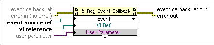

Register Event Callback Function
Owning Palette: ActiveX Functions
Requires: Base Development System
Registers a VI to be called when an event occurs. You use this function to register and handle .NET and ActiveX events. LabVIEW uses the type of the input reference wired to each item to determine the events for which you can register.
You can resize the function to register multiple event callbacks at once for the same .NET or ActiveX object or for a different object.
 | Note If you wire Register Event Callback functions together by wiring the event callback ref out output of one function to the event callback ref input of another function, the last function in the series overwrites all the previous Register Event Callback functions. |

 Add to the block diagram Add to the block diagram |
 Find on the palette Find on the palette |